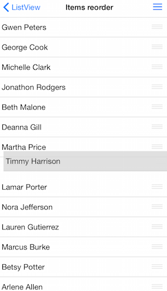

ListView: Reordering Cells
TKListView supports reordering cells. When reordering is enabled a drag handle appears in each cell. Using this handle cells can be dragged thus changing the order of items.

Enable cell reorder
Use the allowsCellReorder property to enable user to reorder cells. When reordering is allowed cells will display a draggable reorder handle as a visual hint. Objective-C
_listView.allowsCellReorder = YES;
Swift
self.listView.allowsCellReorder = true
Responding to cell reorder interaction
After the user performs a reorder gesture the following delegate method from the TKListViewDelegate protocol will be called - listView:didReorderItemFromIndexPath:toIndexPath:
This is the place where you get information about which item was reordered and from what position and to what position. There you need to reorder your source data.
Objective-C
-(void) listView:(TKListView *)listView didReorderItemFromIndexPath:(NSIndexPath *)originalIndexPath toIndexPath:(NSIndexPath *)targetIndexPath{
NSLog(@"Item moved to section: %d, Row: %d", targetIndexPath.section, targetIndexPath.row);
}
Swift
func listView(listView: TKListView!, didReorderItemFromIndexPath originalIndexPath: NSIndexPath!, toIndexPath targetIndexPath: NSIndexPath!) {
NSLog("Item moved to section:\(targetIndexPath.section) row: \(targetIndexPath.row)")
}
*In case you are using TKDataSource you may set it as a delegate for TKListView. With such a setup you will not need to reorder your data manually. TKDataSource will handle that for you.
Objective-C
_listView.dataSource = _dataSource;
_dataSource.allowItemsReorder = YES;
Swift
self.listView.dataSource = self.dataSource
self.dataSource.allowItemsReorder = true